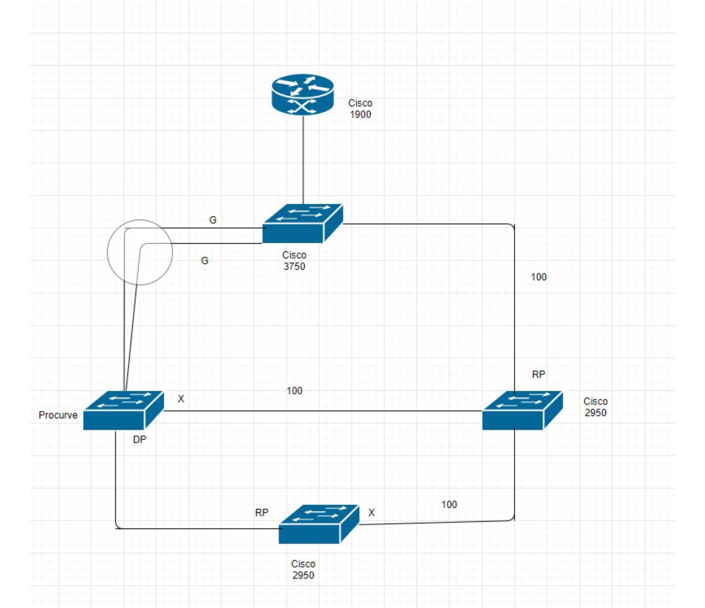

Spanning Trees and Network Performance
In this lab, the operations of several LAN-centric concepts were examined and put to use. VLANs, Spanning Tree Protocol and Link Aggregation were used throughout the lab. The physical architecture was first setup, then spanning tree was implemented across the network, VLANs were designed and added, Link Aggregation was implemented across the network and finally, using Access Control, certain VLANs and switches had their accessibility edited for specific purposes.
The network architecture was set up where there is a single Cisco 1911 router that is connected to a Catalyst 3750 switch. That 3750 was then connected to a HP ProCurve switch which was then later modified to be connected via link aggregation. The Catalyst 3750 was also connected to a Cisco 2950 switch via a single link. Finally, both the ProCurve and 2950 were connected to a second Cisco 2950 switch.
Rapid Spanning Tree was implemented across the network. Each port state was observed as the spanning tree topology was negotiated and converged, The root-bridge was identified as the Catalyst 3750. Then, instead of rapid spanning tree protocol (RSTP), multiple spanning tree (MST) was implemented across the network.
When designing the VLANs, a dedicated VLAN was used as the dedicated switch management VLAN. Doing this meant limiting access to this VLAN from all other VLANs. Nine VLANs were created for the nine departments: server, engineering, sales, accounting, voice, wireless, support, printer and management. An address space was defined for each of the VLANs. Then the VLANs were able to communicate with the others by pinging each other.
The HP ProCurve and Catalyst 3750 were then connected via link aggregation. Then access to the switch management VLAN was limited to only devices on the server and support VLANs. Finally, access to the printer VLAN was limited to block any non-print job traffic from all VLANs except the server and support VLANs.
Network Gear: HP ProCurve, Cisco Catalyst 3750, Cisco 2950 Switch, Cisco 1900 Router
